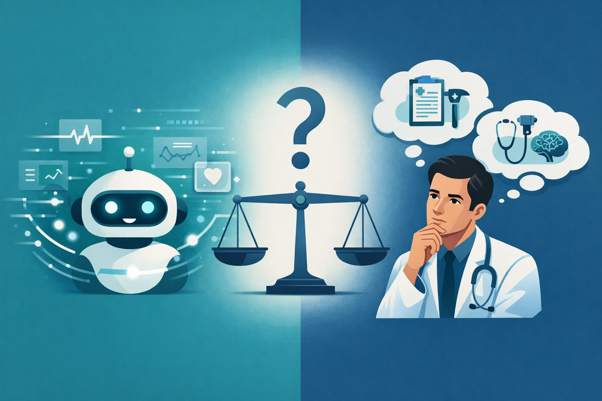

Key Takeaways
- A 2025 meta-analysis of 83 studies (mostly testing GPT-4 and GPT-3.5, published through June 2024) found an overall generative AI diagnostic accuracy of 52.1%. AI did not differ significantly from physicians overall or from non-expert physicians, but expert physicians were 15.8 percentage points more accurate.[1]
- In a randomized Oxford study of 1,298 UK adults published in 2026, people using AI chatbots chose the right course of action no more often than people using their usual sources, such as internet search, and identified relevant conditions less often.[2]
- ECRI named AI chatbot misuse the #1 health technology hazard for 2026, and AI in diagnostics the #1 patient safety concern for 2026.[3][4]
- In a JAMA vignette study of an image-based AI model (not a chatbot), standard AI predictions raised clinicians' diagnostic accuracy by 2.9 percentage points, while systematically biased predictions lowered it by 11.3 points.[5]

The Numbers: How Accurate Are AI Chatbots at Diagnosis?
A key pooled analysis was published in npj Digital Medicine in March 2025: a systematic review and meta-analysis of 83 studies, published between June 2018 and June 2024, that tested generative AI models on diagnostic tasks.[1] GPT-4 (54 studies) and GPT-3.5 (40 studies) were tested most often; newer models such as GPT-4o, Claude 3 Opus and Gemini 1.5 Pro appeared in only a few. The headline finding: an overall pooled diagnostic accuracy of 52.1%. The reviewers rated 76% of the included studies at high risk of bias, and 12 of the 83 were preprints.[1]
The comparison with physicians comes from the 17 studies that tested both. Overall, physicians were 9.9 percentage points more accurate, a difference that was not statistically significant. Against non-expert physicians, defined as trainees or residents, the gap was a statistically insignificant 0.6 points. But against expert physicians, AI models were significantly less accurate, trailing by 15.8 percentage points (p = 0.007).[1] Several newer models, including GPT-4o, Claude 3 Opus and Gemini 1.5 Pro, showed no significant difference from experts. These averages describe the models and studies published through June 2024, not today's models or everyday clinical care, and the authors note that AI may do worse in more complex, real-world scenarios.[1]
A randomized trial run at Stanford, Beth Israel Deaconess and the University of Virginia from November 29 to December 29, 2023 tested 50 US physicians (26 attendings and 24 residents, mostly in internal medicine) on up to six challenging written cases based on real patients.[6] Half could use ChatGPT Plus (GPT-4) along with conventional resources; half used conventional resources such as UpToDate and Google only. Blinded expert graders scored a structured diagnostic reasoning rubric, not just the final diagnosis. The result: no significant difference between the groups (median 76% vs. 74% per case). GPT-4 alone, run three times on the same cases, scored a median 92%. The authors suggested that how the model is prompted may explain part of the gap, and cautioned that the results do not mean LLMs should be used to diagnose without physician oversight.[6]
The Real-World Problem: AI Sounds Confident Even When It's Wrong
The Oxford study, published in Nature Medicine in February 2026, was a randomized, preregistered test of whether chatbots help members of the public make medical decisions.[2] Between August and October 2024, 1,298 UK adults worked through ten written medical scenarios created by doctors. They were randomly assigned to use GPT-4o, Llama 3 or Command R+, or any source they would normally use at home (the control group). Answers were scored against a course of action agreed by three doctors and a list of relevant conditions drawn up by four other doctors.[2]
The findings were sobering. Tested alone, the models identified relevant conditions in 94.9% of cases. Participants using the same models identified relevant conditions in fewer than 34.5% of cases, worse than the control group, and chose the right course of action in fewer than 44.2%, no better than the control group.[2] The University of Oxford's summary put it plainly: the chatbots often gave a mix of good and bad information that users struggled to tell apart.[7] Standard medical-knowledge benchmarks did not predict these failures with real people. The authors call their results a lower bound and note that newer models may score higher on benchmarks, but say it is unclear whether those gains would carry over to real users.[2]
ECRI, an independent patient safety organization, reported in January 2026 that chatbots "have suggested incorrect diagnoses, recommended unnecessary testing, promoted subpar medical supplies, and even invented body parts in response to medical questions." In one ECRI test, a chatbot incorrectly said it was appropriate to place an electrosurgical return electrode over a patient's shoulder blade, advice that would leave the patient at risk of burns.[3]
Dr. Rebecca Payne, a co-author of the Oxford study, was direct in the university's announcement: "Despite all the hype, AI just isn't ready to take on the role of the physician. Patients need to be aware that asking a large language model about their symptoms can be dangerous, giving wrong diagnoses and failing to recognise when urgent help is needed."[7]
Can You Trust an AI Symptom Checker?
Symptom checkers are a different product category from general chatbots. Apps such as the Ada and WebMD symptom checkers ask structured questions about your symptoms and return possible conditions plus triage advice: stay home, see a doctor, or go to the ER. In a Pew Research Center survey of 5,111 US adults in October 2025, about 22% said they get health information from AI chatbots at least sometimes, and among those chatbot users, slightly more rated that information not too or not at all accurate (23%) than highly accurate (18%).[8] So how do these tools actually perform when researchers audit them?
The Accuracy Record: A Decade of Audits
The landmark 2015 audit tested 23 symptom checkers on 45 standardized patient vignettes. The correct diagnosis came first in 34% of evaluations, and triage advice was appropriate in 57%.[9] Later work has not shown much improvement: a 2022 systematic review of 10 studies found primary-diagnosis accuracy ranging from 19% to 37.9% and triage accuracy from 48.8% to 90.1%, with results varying between symptom checkers despite consistent symptom input.[10]
The Safety Myth That Quietly Reversed
For years the standard reassurance was that symptom checkers err on the side of caution. In 2015 they did: over-triage errors outnumbered under-triage errors 2.82 to 1. When researchers tested 22 symptom checkers found in early 2020 on the same 45 vignettes, that ratio had fallen to 1.11 to 1, and the apps missed more than 40% of emergencies. Median triage accuracy (55.8%) was close to the 2015 figure (59.1%).[11] The "safely over-cautious" reputation is out of date.
Are ChatGPT-Style Tools Better Than the Apps?
Somewhat, on consistency. A 2025 systematic review of 19 studies, published in npj Digital Medicine, compared symptom-assessment apps, large language models, and laypeople on self-triage. Apps ranged widely from 11.5% to 90% accuracy depending on the tool; LLMs fell between 57.8% and 76%; laypeople scored 47.3% to 62.4%.[12] The authors concluded that neither apps nor LLMs should be universally recommended or discouraged.
Consistency is not safety. A study published in 2023 entered previously collected, self-reported data from 40 emergency department patients into ChatGPT-3.5, ChatGPT-4.0, WebMD and the Ada app; 37 cases had enough data for triage analysis and 30 for diagnosis. Judged against three board-certified emergency physicians, ChatGPT-3.5's triage advice was unsafe in 41% of cases, compared with 22% for ChatGPT-4.0 and 14% for Ada. The physicians' top diagnosis matched the final ED diagnosis 47% of the time on average, compared with 40% for ChatGPT-3.5 and 33% for ChatGPT-4.0. The authors' conclusion was blunt: unsupervised patient use of ChatGPT for diagnosis and triage is not recommended.[13]
Same Symptoms, Different Answers
Even the same tool can give different answers depending on who types. In a 2024 study by researchers at Healthily, three groups of three testers entered 114 vignettes into the company's own symptom checker. Agreement between testers on the most likely condition was a kappa of 0.49 when testers interpreted the vignettes freely and 0.72 when their inputs were tightly specified, and even in the strictest group, individual testers' accuracy ranged from 43.9% to 57%.[14] How you describe your symptoms changes the answer you get, which is precisely the variable a physician's structured history-taking is designed to control.
No symptom checker or chatbot has any business triaging these. Chest pain or discomfort lasting more than a few minutes, pain or discomfort in the arms, shoulders, jaw, neck, or back, or shortness of breath can signal a heart attack; call 911 immediately.[15] Face drooping, arm weakness, or speech difficulty, or sudden trouble seeing, dizziness, or loss of balance are stroke signs; call 911 immediately, because on average 1.9 million brain cells die every minute a stroke goes untreated.[16] Hives with trouble breathing, throat tightness, a hoarse voice, or swelling of the face or tongue suggest anaphylaxis, an emergency: use epinephrine right away if it is available and call 911.[17] Typing symptoms into an app during any of these costs the one thing that determines outcomes: time.
One more thing worth knowing about regulation: FDA's clinical decision support guidance, in its final version issued January 29, 2026, says software functions that support or provide recommendations to patients or caregivers, rather than health care professionals, meet the definition of a device. FDA says it intends to stay consistent with its existing digital health policies, including its general wellness policy for low-risk devices, when regulating decision support meant for non-professionals.[18]
A reasonable way to use these tools: as preparation, not as a verdict. Write down what the checker suggests, then bring that list to a licensed clinician, whether that is a telehealth visit or an in-person appointment, and let a physician take the history that the app could not.
The Dependency Trap: When Physicians Stop Thinking Independently
There's a risk that cuts in the other direction, too. A retrospective observational study in The Lancet Gastroenterology & Hepatology looked at four endoscopy centres in Poland that introduced AI polyp detection at the end of 2021.[19] In colonoscopies done without AI, the adenoma detection rate fell from 28.4% in the 3 months before AI was introduced to 22.4% in the 3 months after, an absolute drop of 6.0 percentage points. The authors concluded that continuous exposure to AI might reduce detection in standard colonoscopy, suggesting a negative effect on endoscopist behaviour.[19] The evidence is not settled: a 2026 prospective multicenter trial of 13 endoscopists found no upskilling or deskilling in non-AI colonoscopy after a period of AI use.[20] Both studies involve image-detection AI, not chatbots.
A JAMA study showed a related problem. In a randomized vignette survey of 457 hospital clinicians (hospitalist physicians, nurse practitioners, and physician assistants) across 13 US states, an image-based AI model that was deliberately biased lowered diagnostic accuracy by 11.3 percentage points from a 73.0% baseline. Showing clinicians the model's image-based explanations did not fix this: accuracy still fell 9.1 points.[5] The explanations did not protect clinicians from a biased model.
This is what makes the question "Is AI better than doctors?" too simplistic. The real concern isn't whether AI can pass a medical exam. It's what happens to physician judgment when AI is embedded in clinical workflows without proper safeguards, and what happens to patients when they replace a trained clinician with a chatbot conversation.
What AI Cannot Do (Yet)
AI chatbots process text patterns. They generate statistically likely word sequences based on training data, and producing fluent text is not the same as the clinical reasoning a physician does with a patient. Here's what that means in practice:
- They can't read your body language. A patient who says "I feel fine" while appearing acutely uncomfortable tells a clinician more than the words alone convey.
- They can't ask the right follow-up questions. In clinical experience, the questions a patient doesn't think to answer are often the most diagnostically important ones. A skilled physician recognizes what's missing from a history. In the Oxford study, 16 of 30 sampled conversations began with only partial information about the scenario.[2]
- They can't integrate context the way a clinician does. A 22-year-old woman with burning urination is a different clinical picture than a 72-year-old man with the same symptom, even though a chatbot might return the same first-line diagnosis for both.
- They have no accountability. If an AI chatbot misreads a pulmonary embolism as anxiety, there is no professional license at stake and no one to call the patient back when the diagnosis doesn't sit right.
- They don't reliably signal uncertainty. In the Oxford study, two users who described very similar symptoms of a subarachnoid hemorrhage (bleeding around the brain) got opposite advice: one was told to lie down in a dark room, the other to seek emergency care. And when asked to explain their choices, a couple of participants pointed to the chatbot's apparent confidence ("the AI seemed pretty confident").[2]
Where AI Belongs in Healthcare
None of this means AI has no place in medicine. It does, but as a tool, not a replacement. The trials so far are mixed on how much AI helps physicians, and the clearest gains have come with a physician still in the loop.
A 2025 randomized trial in Nature Medicine, led by Stanford researchers, gave 92 practicing physicians five expert-developed cases based on real, de-identified patient encounters, with information revealed step by step. Physicians using GPT-4 plus conventional resources scored 6.5 percentage points higher on management reasoning (treatment and testing decisions) than those using conventional resources alone, and did not differ significantly from GPT-4 alone.[21] The physician was still in the loop, applying judgment and making the final decision, and the authors say the result still needs validation in real clinical practice. In the earlier diagnostic trial described above, by contrast, GPT-4 access did not significantly improve physicians' scores.[6]
That is the model the evidence best supports so far. An AI system that surfaces relevant literature, flags potential drug interactions, or suggests differential diagnoses for a physician to evaluate can be a genuine clinical asset. An AI chatbot that tells a patient with chest tightness that they probably have acid reflux, when a physician would order an EKG, is a liability.
AI chatbots can be useful for general health education, such as understanding what a condition is, how a medication works, or what questions to ask your doctor. They should not be used to diagnose symptoms, decide whether to seek care, or replace a consultation with a licensed physician. When your health is on the line, the person on the other side of that conversation should have a medical degree, a license, and the clinical training to know what they don't know.
How to cite this guide
Bhavsar P. AI Chatbots vs. Physicians: What the Evidence Says About Diagnostic Accuracy. TeleDirectMD Health Guides. Last reviewed March 16, 2026. https://teledirectmd.com/health-guides/ai-chatbots-vs-physicians-diagnostic-accuracy/
References
- Takita H, Kabata D, Walston SL, et al. "A systematic review and meta-analysis of diagnostic performance comparison between generative AI and physicians." npj Digital Medicine. 2025;8(1):175. nature.com
- Bean AM, Payne RE, Parsons G, et al. "Reliability of LLMs as medical assistants for the general public: a randomized preregistered study." Nature Medicine. 2026;32(2):609-615. (Publisher correction to a figure axis label, Nat Med 2026;32(5):1937.) pubmed.ncbi.nlm.nih.gov
- ECRI. "Misuse of AI chatbots tops annual list of health technology hazards." January 21, 2026. Accessed November 15, 2026. ecri.org
- ECRI. "AI use in diagnostic care, rural care access, and surge in preventable diseases top annual report of patient safety concerns." 2026 (no date shown on page). Accessed November 15, 2026. ecri.org
- Jabbour S, Fouhey D, Shepard S, et al. "Measuring the Impact of AI in the Diagnosis of Hospitalized Patients: A Randomized Clinical Vignette Survey Study." JAMA. 2023;330(23):2275-2284. jamanetwork.com
- Goh E, Gallo R, Hom J, et al. "Large Language Model Influence on Diagnostic Reasoning: A Randomized Clinical Trial." JAMA Network Open. 2024;7(10):e2440969. pubmed.ncbi.nlm.nih.gov
- University of Oxford. "New study warns of risks in AI chatbots giving medical advice." News release, February 10, 2026. Accessed November 15, 2026. ox.ac.uk
- Pasquini G, Stocking G, Kikuchi E, Pula I, Yam E. Pew Research Center. "Users of social media and AI chatbots for health information are more likely to say they are convenient than accurate." April 7, 2026. pewresearch.org
- Semigran HL, Linder JA, Gidengil C, Mehrotra A. "Evaluation of symptom checkers for self diagnosis and triage: audit study." BMJ. 2015;351:h3480. pmc.ncbi.nlm.nih.gov
- Wallace W, Chan C, Chidambaram S, et al. "The diagnostic and triage accuracy of digital and online symptom checker tools: a systematic review." npj Digital Medicine. 2022;5(1):118. pubmed.ncbi.nlm.nih.gov
- Schmieding ML, Kopka M, Schmidt K, et al. "Triage Accuracy of Symptom Checker Apps: 5-Year Follow-up Evaluation." Journal of Medical Internet Research. 2022;24(5):e31810. pmc.ncbi.nlm.nih.gov
- Kopka M, von Kalckreuth N, Feufel MA. "Accuracy of online symptom assessment applications, large language models, and laypeople for self-triage decisions." npj Digital Medicine. 2025;8(1):178. nature.com
- Fraser H, Crossland D, Bacher I, et al. "Comparison of Diagnostic and Triage Accuracy of Ada Health and WebMD Symptom Checkers, ChatGPT, and Physicians for Patients in an Emergency Department: Clinical Data Analysis Study." JMIR mHealth and uHealth. 2023;11:e49995. mhealth.jmir.org
- Meczner A, Cohen N, Qureshi A, et al. "Controlling Inputter Variability in Vignette Studies Assessing Web-Based Symptom Checkers: Evaluation of Current Practice and Recommendations for Isolated Accuracy Metrics." JMIR Formative Research. 2024;8:e49907. pmc.ncbi.nlm.nih.gov
- Centers for Disease Control and Prevention. "About Heart Attack Symptoms, Risk, and Recovery." Page dated October 24, 2024. Accessed November 15, 2026. cdc.gov
- American Stroke Association. "Stroke Symptoms and Warning Signs." Accessed November 15, 2026. stroke.org
- MedlinePlus Medical Encyclopedia. "Anaphylaxis." US National Library of Medicine. Review date January 20, 2026. Accessed November 15, 2026. medlineplus.gov
- US Food and Drug Administration. "Clinical Decision Support Software: Guidance for Industry and Food and Drug Administration Staff." Final guidance issued January 29, 2026 (supersedes the version issued January 6, 2026). Accessed November 15, 2026. fda.gov
- Budzyń K, Romańczyk M, Kitala D, et al. "Endoscopist deskilling risk after exposure to artificial intelligence in colonoscopy: a multicentre, observational study." Lancet Gastroenterology & Hepatology. 2025;10(10):896-903. pubmed.ncbi.nlm.nih.gov
- Pedersen TA, Mori Y, Botteri E, et al. "Learning and deskilling effects of artificial intelligence in colonoscopy among endoscopists with different levels of experience: a pragmatic, prospective trial." Endoscopy. 2026;58(9):1003-1014. pubmed.ncbi.nlm.nih.gov
- Goh E, Gallo RJ, Strong E, et al. "GPT-4 assistance for improvement of physician performance on patient care tasks: a randomized controlled trial." Nature Medicine. 2025;31(4):1233-1238. pubmed.ncbi.nlm.nih.gov